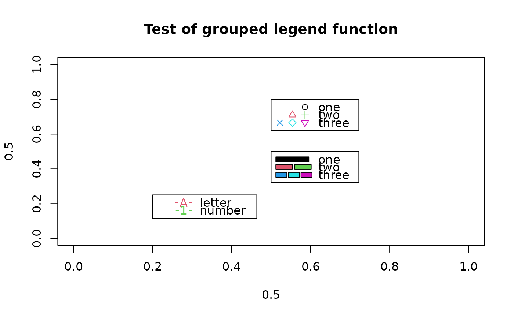

Legend with grouped bars, lines or symbols
legendg.RdDisplays a legend with more than one rectangle, symbol or line.
Usage
legendg(x,y=NULL,legend,fill=NULL,col=par("col"),
border=list("black"),lty,lwd,pch=NULL,angle=45,density=NULL,
bty="o",bg=par("bg"),box.lwd=par("lwd"),box.lty=par("lty"),
box.col=par("fg"),pt.bg=NA,cex=1,pt.cex=cex,pt.lwd=lwd,
pt.space=1,xjust=0,yjust=1,x.intersp=1,y.intersp=1,
adj=c(0,0.5),text.width=NULL,text.col=par("col"),merge=FALSE,
trace=FALSE,plot=TRUE,ncol=1,horiz=FALSE,title=NULL,
inset=0,xpd,title.col=text.col)Arguments
- x,y
Position of the legend as in legend.
- legend
Labels for the legend as in legend.
- fill
List of fill colors for the rectangles.
- col
Color(s), perhaps as a list, for the symbols.
- border
Border color(s) for the rectangles.
- lty
Line type, currently ignored and set to 1.
- lwd
Line width, currently ignored.
- pch
List of symbols for the legend.
- angle,density
Currently ignored.
- bty
Legend box type to be displayed.
- bg
Background color for the legend.
- box.lwd,box.lty,box.col
Line width, type and color for the surrounding box.
- cex
Character expansion for text.
- pt.bg,pt.cex,pt.lwd
Background color, character expansion and line width for the symbols.
- pt.space
Spacing for the symbols as a multiplier for strwidth("O").
- xjust,yjust
Justification for the legend.
- x.intersp,y.intersp
x and y character spacing for the legend text.
- adj
Text adjustment.
- text.width,text.col
Width and color of the legend text.
- merge
Whether to merge points and lines.
- trace
Show how the legend is calculated.
- plot
Whether to plot the legend.
- ncol
Number of columns in the legend.
- horiz
Whether to display a horizontal legend.
- title
Title for the legend.
- inset
Inset distances for use with keywords.
- xpd
An optional value for par(xpd=).
- title.col
Color for the legend title.
Details
legendg calls legend to display a legend with a blank space to the left of the labels. It then attempts to display groups of colored rectangles or symbols in that space depending upon the contents of either fill or pch. These should be in the form of a list with the number of elements equal to the number of labels, and one or more fills or symbols for each label. legendg will display up to four fills or symbols next to each label, allowing the user to label a group of these rather than just one per label.
Examples
plot(0.5,0.5,xlim=c(0,1),ylim=c(0,1),type="n",
main="Test of grouped legend function")
legendg(0.5,0.8,c("one","two","three"),pch=list(1,2:3,4:6),
col=list(1,2:3,4:6),pt.space=1.5)
legendg(0.5,0.5,c("one","two","three"),fill=list(1,2:3,4:6))
# fake a line/point with text points
legendg(0.2,0.25,c("letter","number"),
pch=list(c("-","A","-"),c("-","1","-")),
col=list(rep(2,3),rep(3,3)))
